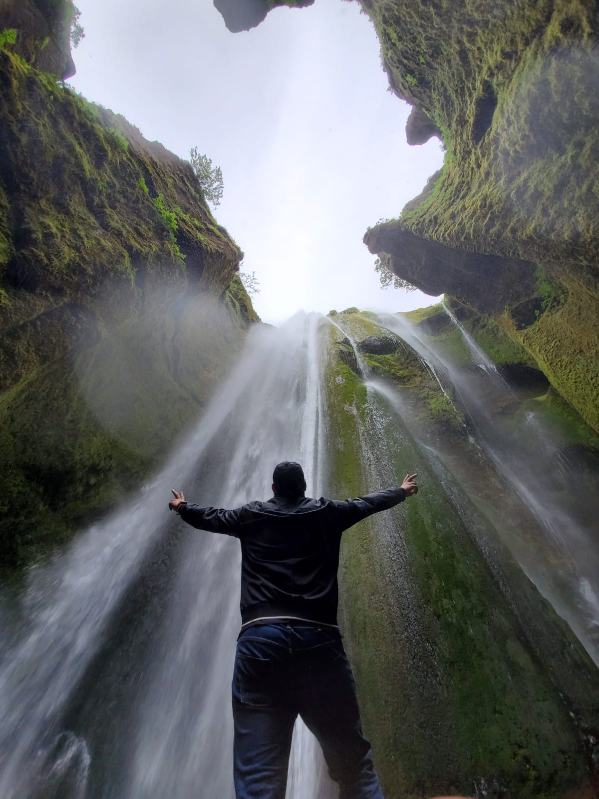
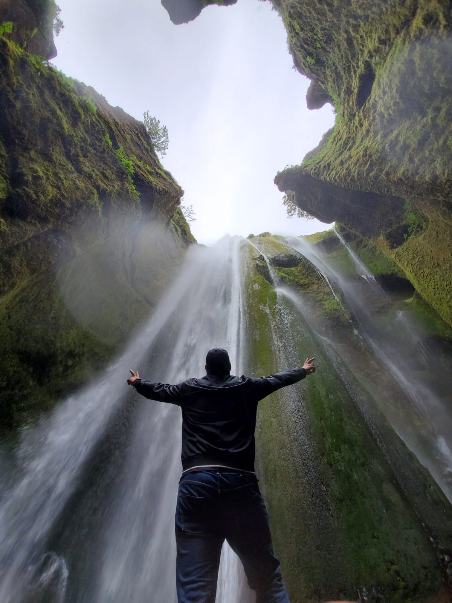

Um mig
Ég heiti Omar
Ég er 19 ára
Ég er frá syrlandi
Ég kom til island í april 2016
Ég er í Tæhniskoli og ég læra tölvufræði
 

Áhugamál
Lyftingar, þekktar sem líkamsbygging, er mikilvægur hlutur sem þarf að æfa fyrir bæði karla og konur.Það er íþrótt sem hefur ekki verið úthlutað til ákveðins hóps eða að æfa á þann hátt sem ekki er gert reglulega. Í lífeðlisfræðilegum, sálrænum og heilsufarslegum breytingum sem birtast á fyrstu stigum þessarar æfingar eru mörg jákvæð áhrif og ávinningur af þyngdarlyftingum, þar sem við munum nefna mikilvægustu kostina.
- Draga úr þyngd
- Að draga úr einkennum þunglyndis
- Aukinn sveigjanleiki og vöðvastyrkur
Myndskeið frá YouTube um lyftingar
MP3 audio